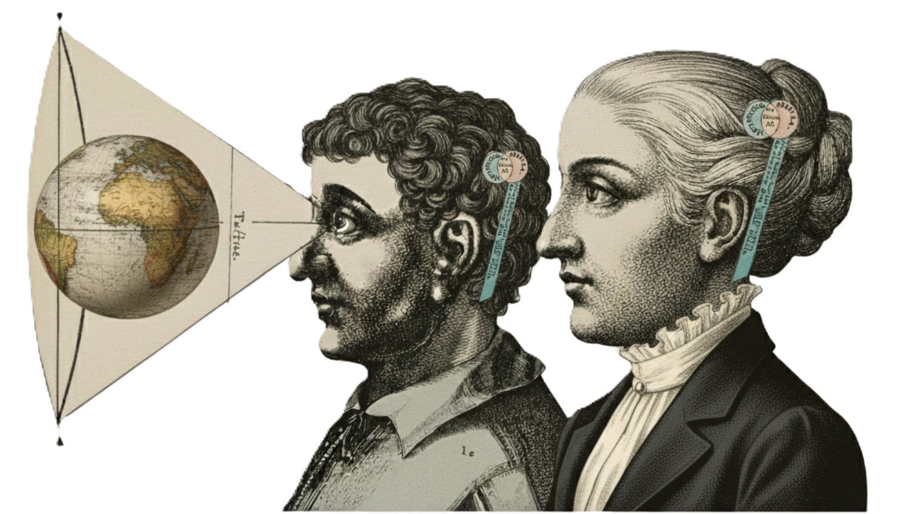
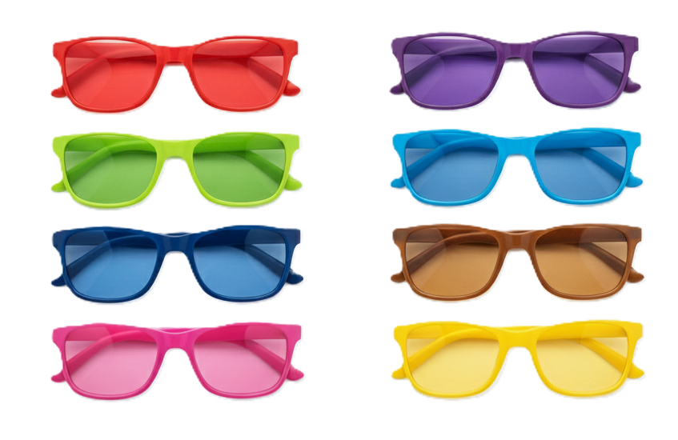

DISCOVER and UNDERSTAND yourself to develop success strategies in:
communications, career, relationships, sporting, success, business success

Each of us perceives the world differently
Behavioural research suggests that the most effective people are those who understand themselves and how they perceive the world differently than others. We, ourground.ie, build on ancient wisdom from as far back as
Pythagoras with the assistance of modern psychology including Carl Jung and developing neurology
to develop the ITT 1 programme (Innate Traits Test).
The ITT 1 questionnaire enables people to DISCOVER and UNDERSTAND their unique
personal perception, its strengths and weaknesses. ITT 1 helps to develop strategies on how
best to meet the demands of their personal and professional environments.
Perception Evaluation
Unlock Your Perception

This evaluation will guide you through a series of questions to reveal your unique personality profile. Discover the lens through which you see the world.